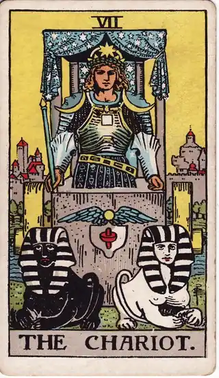
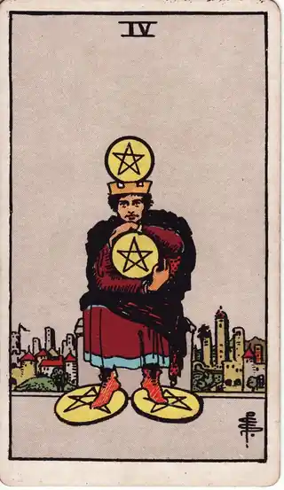
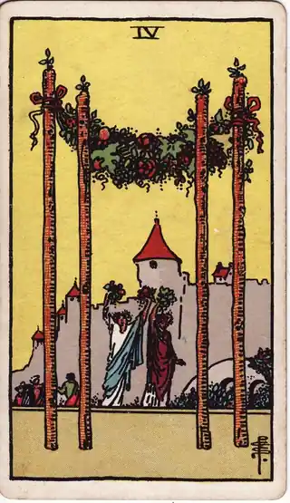

READING
車を買うか迷うとき、後悔しない決め方
・ DECIDE. 編集部
夜、布団の中でスマホを開くと、また欲しい車の写真を見ている。見積もりシミュレーションを出しては閉じ、グレードの比較表を開いては閉じる。買いたい気持ちは本物なのに、税金、保険、車検、駐車場代のことを考えると手が止まる。比べ始めてから、もう何週間になるだろう。
先に言っておくと、このページのゴールは「お得な買い方を知ること」ではありません。ゴールは、買っても買わなくても「自分の暮らしに合った選択だった」と言えることです。車の後悔は、車そのものではなく、使う場面と維持費を見ないまま決めたときに生まれます。
POINT 01 車の迷いは、「欲しい」と「払い続けられるか」の綱引き
車の金額は、買うときの価格だけでは決まりません。車両価格250万円のコンパクトカーでも、維持費は年に40万〜60万円ほどかかります。自動車税は普通車で年2万5千〜4万5千円（軽自動車なら1万800円）、任意保険は年6万〜10万円、車検は2年ごとに10万〜15万円。都市部なら駐車場代が月1万〜3万円、ガソリン代も走るほど積み上がります。ローンを組めば、5年の返済のあいだ毎月出ていくお金が固定されます。
払い方も、迷いの一部です。頭金をどれくらい入れるか、ボーナス払いを組むか。月々の負担を軽く見せる残価設定型のローンは、契約が終わる時期に大きな支払いか、乗り換えの判断が待っています。月額の安さだけで選ぶと、数年後の自分に迷いを先送りすることになります。逆に、頭金を入れすぎて手元の貯蓄が薄くなると、故障や修理といった車ならではの出費に対応できません。「買ったあとに残るお金」まで含めて、総額の景色なのです。
逆に、使う頻度で考えると景色が変わります。週末に月2〜3回乗るだけなら、カーシェアやレンタカーで年10万円前後で済むこともあります。通勤で毎日使う人、子どもの送迎がある人、趣味のドライブが暮らしの中心にある人とは、同じ車でも意味がまったく違うのです。
だから、迷いを解く材料は車種の比較表ではありません。「1年あたりの総額」といくらになるかと、「誰と・どこへ・どれくらい走るか」という使う場面の具体性です。この二つが言えるようになると、欲しい気持ちと現実の綱引きに、決着のつけ方が見えてきます。
POINT 02 カードの視点で見る

戦車は、二頭のスフィンクスを手綱で操り、前へ進む姿です。キーワードは「意志」「前進」「コントロール」。車への欲しい気持ちそのものを映すカードで、気持ちを否定せず、手綱を握るのは自分だという視点を与えてくれます。勢いのまま買うのでも、我慢して諦めるのでもなく、予算と用途という条件を決めて、自分で進む。その姿勢を思い出させます。戦車は、力任せに走る姿ではありません。二つの異なる衝動を同じ方向へ向かわせる技術です。「欲しい」という衝動と「家計を守りたい」という衝動を戦わせるのではなく、どちらも自分の一部として前に進める。そのための条件決めなのです。

ペンタクルの4は、金貨を抱え込んで手放さない人物の姿。「所有」「執着」「守り」を表します。車の決断では、維持費への不安や、貯蓄を崩したくない気持ちとして現れます。抱え込んでいるのが将来への安心なのか、それとも「車くらい持っていないと」という見栄なのか。守りたいものの正体が見えると、不安の扱い方が変わります。

ワンドの4は、花の冠の下で祝う人々の姿で、「安定」「祝い」「帰る場所」を表します。車がもたらすのは移動手段だけではありません。家族旅行、帰省の荷物、週末の遠出。暮らしの場面に値段をつける視点です。維持費の計算だけでは出てこない「この車のある暮らしの喜び」を、判断材料のテーブルに戻してくれます。
POINT 03 買う理由と条件を、記録に残す
車の決断は数年に一度の大きな決断だからこそ、記録が効きます。迷っている今の条件――予算の上限、月の維持費の上限、譲れない用途――を残しておくと、営業の提案や限定色の誘惑に気持ちが揺れたとき、自分の基準に戻ってこられます。
買ったあとも同じです。実際の維持費と、「買ってよかった」と感じた場面を残しておくと、5年後、10年後の買い替えのときに、感覚ではなく実績で判断できます。逆に、今回は買わないと決めた場合も、見送った理由を一言残しておけば、同じ迷いを何度も繰り返さずに済みます。カードを引いたときの自分の状態と一緒に残せば、「あの日は焦っていた」「今日は地に足がついている」と、あとから感情と条件を分けて見返せます。
家族がいる場合は、その条件を家族と共有しておくことも大切です。誰かの一存で決めた車は、維持費の請求が来るたびに小さな不満の種になります。条件を言葉にして残しておけば、「何を優先して選んだか」が家族のあいだでも共有できて、決断が一人の負担になりません。一人で抱える迷いより、言葉になった条件のほうが、ずっと長持ちします。車を買うか迷うときの整理の全体像は、車を買うか迷うときのページにもまとめています。
POINT 04 自分への問いかけ
最後に、欲しい車に向けて問いかけてみてください。その車に乗っている場面は、具体的に描けるか。週に何回、誰と、どこへ行くのか。ローンと維持費を足した1年の総額を、ためらわずに言えるか。駐車場代まで入っているか。用途のうち、カーシェアで代用できるものはどれくらいあるか。5年後の自分が、その支払いを「妥当だった」と言えるか。そして、買わないと決めたら、その理由を一文で言えるか。
答えが「買う」でも「買わない」でも構いません。大事なのは、憧れや焦りではなく、自分の条件で決めたという実感です。その実感がある決断は、あとから維持費の明細を見ても揺らぎません。迷いの長さは、失敗ではありません。大きな出費ほど、条件を言葉にする時間が必要です。ハンドルを握るのは、いつも自分です。